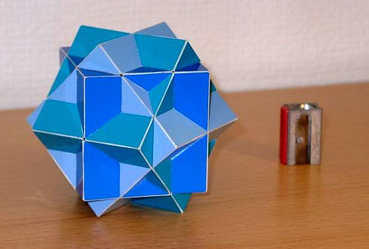

Classic Compound of Three Cubes

The classic compound of three cubes is a well known model which can be found on M.C. Escher's Waterfall for instance. It is a beautiful model with cube symmetry. It looks like a simple model, but it is not that easy to build; it is in fact rather difficult to get the lines straight.
If you add one cube according to the symmetry, you will get this model, which is easier to build and less work, since you will only have to cut and paste 96 pieces instead of 120.
Last Updated
2018-05-19